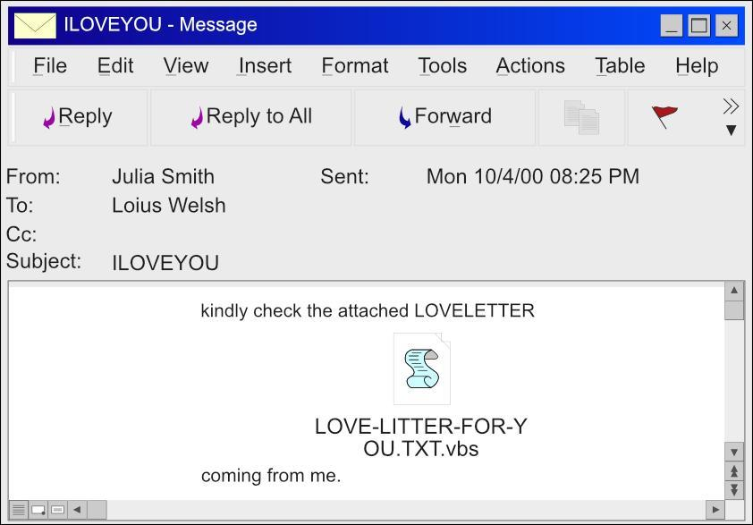
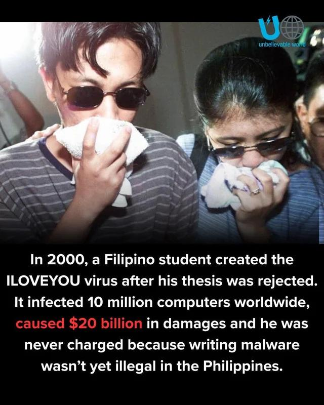

💌 "ILOVEYOU" ❤️ ဒီစာလေးကို Email ထဲမှာ မြင်လိုက်ရရင်...
သင် ဖွင့်ကြည့်မိမလား? 👀
🗓 7 August 2026
👤 Teacher Hsu Lae Waddy
၂၀၀၀ ခုနှစ်တုန်းကတော့ လူသန်းပေါင်းများစွာက "ဖွင့်မိခဲ့ကြပါတယ်။"
သူတို့ထင်တာက...
"ဘယ်သူများ Love Letter ပို့ထားတာလဲ?" 💕
ဒါပေမယ့်...
အဲ့ဒီ Email ဟာ Love Letter မဟုတ်ခဲ့ပါဘူး။
ကမ္ဘာတစ်ဝှမ်းက Computer သန်းပေါင်းများစွာကို ကူးစက်ခဲ့တဲ့ ILOVEYOU Worm ဖြစ်နေခဲ့တာပါ။ 🦠
📧 Email Subject ကတော့…
❤️ ILOVEYOU တဲ့
အထဲမှာတော့
LOVE-LETTER-FOR-YOU.TXT.vbs ဆိုတဲ့ဖိုင်လေးနဲ့ပေါ့
အဲ့ဒီအချိန်က Windows ဟာ File Extension (.vbs, .exe) တွေကို Default အနေနဲ့ ဖျောက်ထားတဲ့အတွက်...
လူတွေမြင်ရတာက...
📄 LOVE-LETTER-FOR-YOU.TXT
"TXT File လေးပဲ" လို့ ထင်ပြီး Double Click လုပ်လိုက်ကြပါတယ်။

ဒါပေမယ့် တကယ်တော့...
.vbs ဆိုတာ Visual Basic Script ဖြစ်ပြီး Program တစ်ခုလို အလုပ်လုပ်နိုင်ပါတယ်။
Click တစ်ချက်တည်းနဲ့... ဒုက္ခစပါတော့တယ်။
---
🦠 ဖွင့်လိုက်တာနဲ့ ဘာတွေဖြစ်သွားလဲ?
- 📉 အကျိုးဆက်ကတော့...
- 💻 Computer သန်းပေါင်းများစွာ ကူးစက်ခဲ့တယ်။
- 🌎 နိုင်ငံပေါင်း ၁၅၀ ကျော် ထိခိုက်ခဲ့တယ်။
- 💰 စီးပွားရေးပျက်စီးဆုံးရှုံးမှုက အမေရိကန်ဒေါ်လာ ၅ ဘီလီယံမှ ၁၀ ဘီလီယံ ခန့်အထိ ရှိခဲ့ပါတယ်။

👨🎓 ဖန်တီးသူက ဘယ်သူလဲ?
- ILOVEYOU Worm ဟာ Onel de Guzman ဆိုတဲ့ ဖိလစ်ပိုင်နိုင်ငံက အသက် ၂၄ နှစ်အရွယ် ကျောင်းသားနဲ့ ဆက်စပ်တယ်လို့ စုံစမ်းစစ်ဆေးမှုတွေမှာ ဖော်ပြထားပါတယ်။
- သူဟာ Internet အသုံးပြုဖို့ ပိုက်ဆံမရှိတာကြောင့် Password ရယူနိုင်မယ့် Thesis တစ်ခုကို တင်ခဲ့ဖူးပါတယ်။
- ဒါပေမယ့် ဥပဒေနဲ့ မညီညွတ်တဲ့အတွက် ကျောင်းက ပယ်ချခဲ့ပါတယ်။
- နောက်ပိုင်း ILOVEYOU ဖြစ်ရပ်နဲ့ သူ့ကို သံသယရှိခဲ့ပေမယ့် အဲ့ဒီအချိန်က ဖိလစ်ပိုင်မှာ Cybercrime ဥပဒေ မပြည့်စုံသေးတဲ့အတွက် ပြစ်ဒဏ် မချနိုင်ခဲ့ပါဘူး။
💡 ဒီဖြစ်ရပ်က သင်ပေးတဲ့ သင်ခန်းစာကတော့...
Hacker တွေက Computer ကို အရင် Hack မလုပ်ပါဘူး။
လူရဲ့ စိတ်ကို အရင် Hack လုပ်ပါတယ်။
Curiosity (စူးစမ်းချင်စိတ်) နဲ့ Trust (ယုံကြည်မှု) ကို အသုံးချပြီး လူကို Click လုပ်အောင် လှည့်စားကြတာပါ။
ဒါကြောင့်...
- ✅ မသိတဲ့ Email Attachment ကို မဖွင့်ပါနဲ့။
- ✅ File Extension (.exe, .vbs) ကို သေချာစစ်ပါ။
- ✅ Antivirus နဲ့ Software တွေကို အမြဲ Update ထားပါ။
💬 သင်သာ ၂၀၀၀ ခုနှစ်တုန်းက "ILOVEYOU ❤️" ဆိုတဲ့ Email ကို ရခဲ့ရင်... ဖွင့်ကြည့်မိမလား? 😅